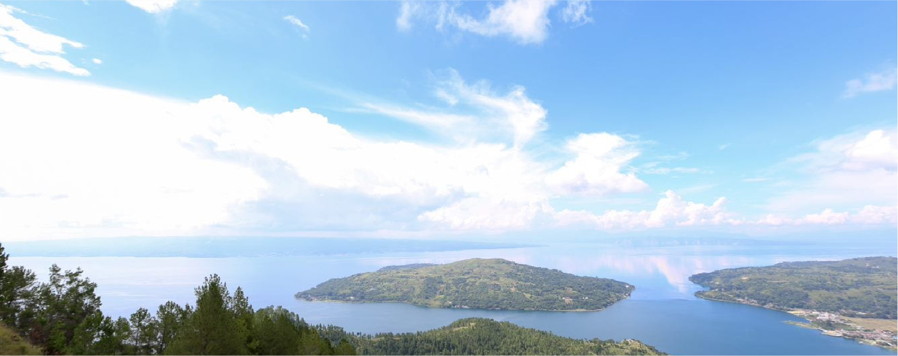

グァテマラ/サンタバルバラ
［クロップ］2024-25
［国 / エリア］ペルー、カハマルカ
［標高］1,900m
［品種］ティピカ
［精製］ウォッシュト
［生産者］ウィルダーガルシア
［梱包］10kgグレインプロ
［価格］000000
| 送料について | ダミーテキストダミーテキストダミーテキストダミーテキストダミーテキスト |
|---|---|
| そのほか注意事項 | ダミーテキストダミーテキストダミーテキストダミーテキストダミーテキスト |
FEATURES
選別後のリザルト表
※ 表についての注釈を記載します。表についての注釈を記載します。
※ 表についての注釈を記載します。表についての注釈を記載します。表についての注釈を記載します。
※ 表についての注釈を記載します。表についての注釈を記載します。表についての注釈を記載します。
焙煎度と風味
焙煎度と風味の全体説明文焙煎度と風味の全体説明文焙煎度と風味の全体説明文焙煎度と風味の全体説明文焙煎度と風味の全体説明文焙煎度と風味の全体説明文
ここにハイローストのコンテンツが表示されます。
ボタンをクリックすると内容が切り替わります。
複数行のテキストも表示できます。
産地特性
毎年安定して良いコーヒーを届けてくれているチリポ地域。首都を擁し、海岸線に沿って南東方向に伸びるように広がるサン・ホセ州の東端に位置しています。ここはコスタリカ最高峰のチリポ山に抱かれた、都市部とは違い山と森が大部分を占める自然豊かな地域です。ここ数年、当社でも積極的に扱うようになったエリアであり、【ロス・クレストネス】を筆頭に【インペリオ・ロホ】や【コラソン・デ・ヘスス】など続々とマイクロミルが設立されています。ICAFE(コスタリカコーヒー協会)の生産エリア区分においてこの地域はかつて「ブルンカ」と呼ばれており、主に汎用品のコーヒーを生産するエリアとして認知されていました。毎年安定して良いコーヒーを届けてくれているチリポ地域。首都を擁し、海岸線に沿って南東方向に伸びる
生産地との
取り組み
ここにエリアのコンテンツが表示されます。
ボタンをクリックすると内容が切り替わります。
複数行のテキストも表示できます。